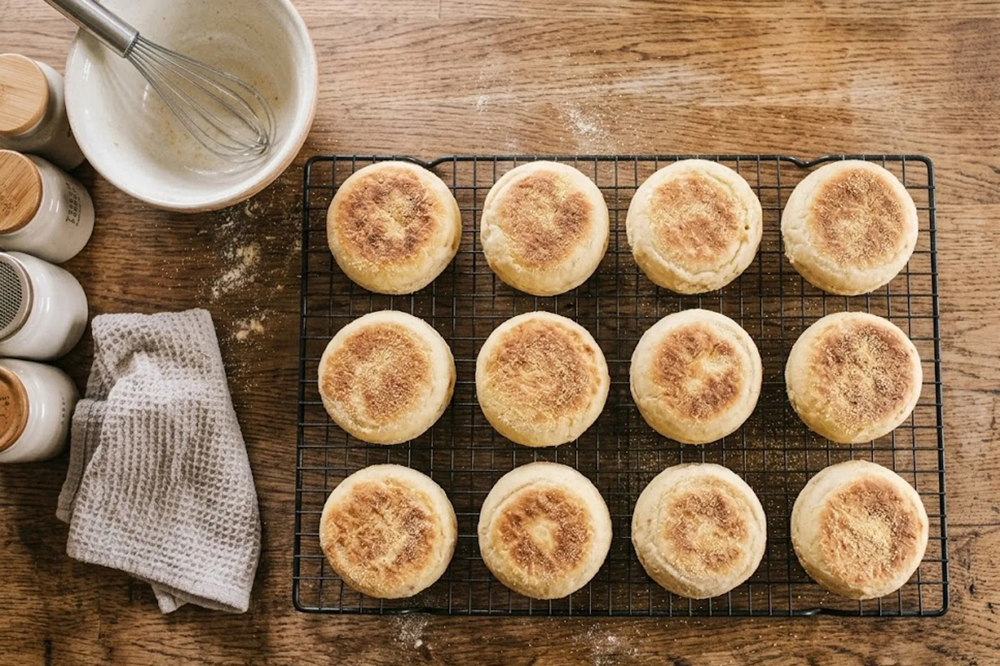
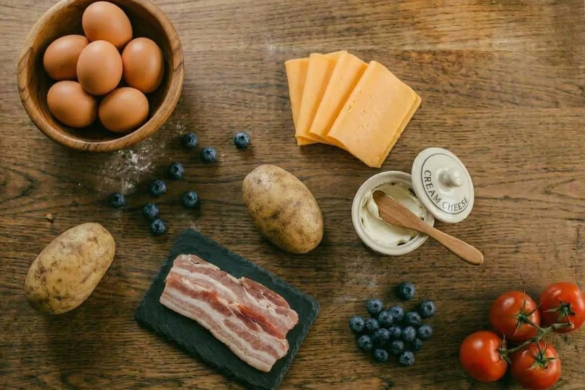
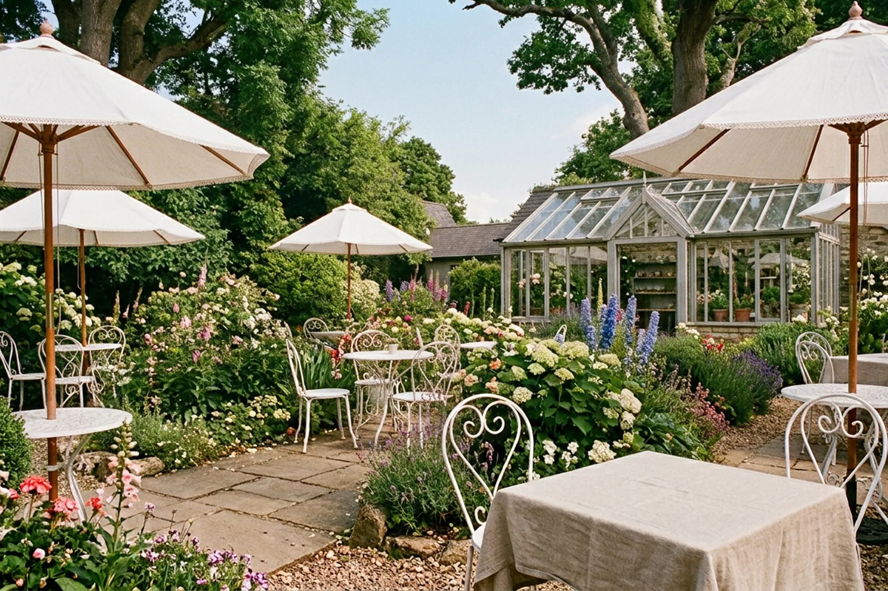

Oh!Ratomでは、栃木県産パン用硬質小麦の「ゆめかおり」を使用しています。
小麦の香ばしさと、ふんわりとした食感を楽しんでいただけるよう、毎日のマフィンづくりに取り入れています。
いつものひと口に、栃木の恵みを。
Oh!Ratomでは、栃木県産パン用硬質小麦の「ゆめかおり」を使用しています。
小麦の香ばしさと、ふんわりとした食感を楽しんでいただけるよう、毎日のマフィンづくりに取り入れています。
いつものひと口に、栃木の恵みを。

Oh!Ratomのイングリッシュマフィンは、毎朝ひとつひとつ焼き上げています。
こんがりとした焼き色に、香ばしい小麦の風味。外は香ばしく、中はふんわりとした食感をお楽しみいただけます。
食事にぴったりの惣菜マフィンには、具材のおいしさを引き立てるシンプルな生地を。デザートマフィンには、甘い具材と相性のよい生地をそれぞれ作っています。
お好きなマフィンを、その日の気分に合わせて。

マフィンに使う素材も、おいしさをつくる大切なもの。
Oh!Ratomでは、小麦だけでなく、チーズやベーコン、野菜などの素材にもこだわっています。
季節ごとに、その時いちばんおいしいものを。
那須のチーズを使用。コクとまろやかさを添えます。
那珂川町のベーコン使用。桜チップで燻製された香ばしさが楽しめます。
栃木県産の旬の野菜を取り入れ、季節ごとのおいしさをお届けします。
香ばしいマフィンと一緒に楽しんでいただけるよう、コーヒーと紅茶も丁寧に選んでいます。
コーヒーは、マフィンのおいしさを引き立てる一杯を。紅茶は、イギリスから仕入れた茶葉も取り揃えています。
お気に入りのマフィンと、好きな飲みものを組み合わせて、ほっとひと息つく時間をお楽しみください。

お店の庭は、植物が好きな店主が少しずつ育てている小さなイングリッシュガーデン。
季節ごとに咲く花や緑を眺めながら、マフィンとコーヒー・紅茶を楽しめます。
お天気のよい日は、ぜひお庭の席でゆっくりと。わんちゃんとのご来店も歓迎しています。
冬には温室もオープン。寒い季節も、植物に囲まれた空間でのんびりとお過ごしいただけます。